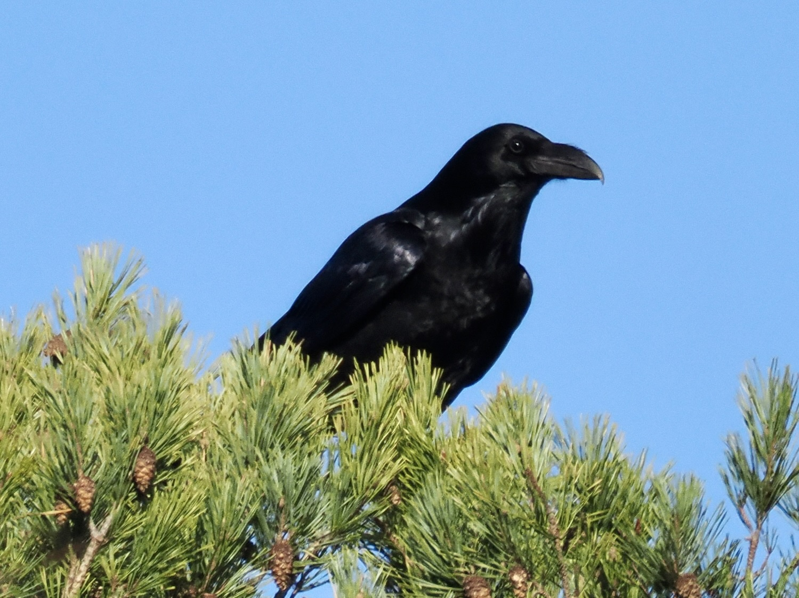
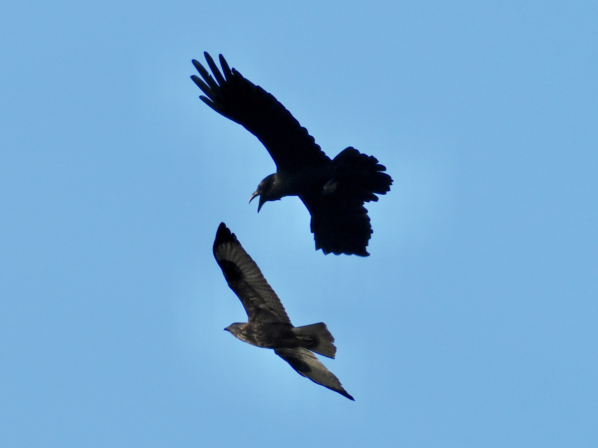
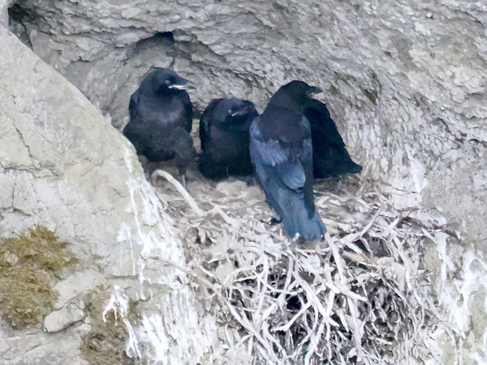

Common Raven
Corvus corax
Order: Passeriformes
Family: Corvidae

A large black corvid. Scruffy neck feathers. Large beak, sometimes described as "beak with a bird" (whereas Carrion Crow is "bird with a beak").

Corvids are known to chase away birds of prey, known as "mobbing". This Raven is mobbing a Common Buzzard, which is around its size. Not that size really matters though, when it comes to defending territory.

Nests on cliffs. Chicks have a pink gape (vs black gape in adults) and blue eyes. And they are loud!